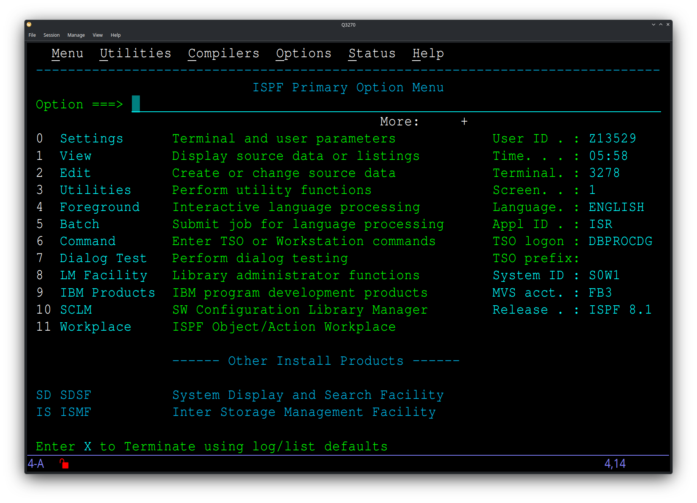

Q3270 is a TN3270 terminal emulator for accessing IBM mainframe systems running MVS, z/OS, VM/CMS and related operating systems. Built with Qt, it runs on Linux and macOS.

Features
- Standard 3270 model sizes plus IBM-DYNAMIC user-selectable screen dimensions
- Colour theme editor with full 3179 field attribute colour mapping
- Keyboard mapping dialog
- Session management — save, load, and auto-start session lists
- Dynamic font scaling to fit the window
- SSL/TLS support
Installation
Linux
Install Qt 6 development libraries via your package manager, then build from source:
Ubuntu/Debian:
sudo apt install build-essential qtbase5-dev qttools5-dev-tools libqt5svg5-dev
Fedora:
sudo dnf install qt5-qtbase-devel qt5-qtsvg-devel
openSUSE:
sudo zypper install libqt5-qtbase-devel libqt5-qtsvg-devel
Arch Linux:
sudo pacman -S base-devel qt5-base qt5-svg
Then:
git clone https://github.com/HobbitHacker/Q3270.git
cd Q3270
cmake .
make
./Q3270
macOS
brew tap HobbitHacker/q3270
brew install q3270
Documentation
Full documentation is at https://hobbithacker.github.io/Q3270.
Licence
BSD 3-Clause. See [LICENSE](LICENSE) for details.
 1.9.8
1.9.8